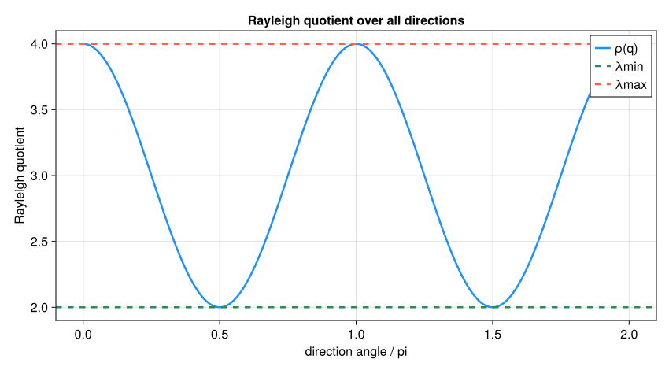
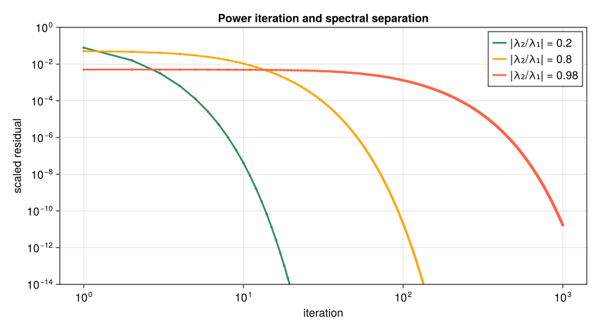
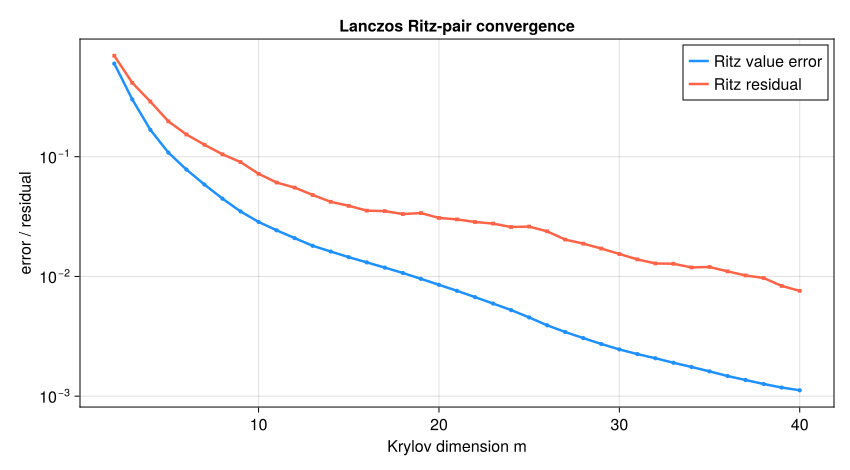

11. 固有値問題と反復法#
正方行列 \(A\) に対する固有値問題は
を満たす固有値 \(\lambda\) と固有ベクトル \(v\) を求める問題である。\(A\) を作用させると、同じベクトルのスカラー倍になる特別な方向を探している。実数の負の固有値なら向きは反転し、長さは \(|\lambda|\) 倍になる。
固有対は、振動の固有モード、時間発展の成長・減衰、量子系のエネルギー、グラフの構造、主成分分析（PCA）などに現れる。離散ラプラシアンの各固有ベクトルは独立に減衰する空間モードと考えられる。
実際の計算では、最初に次の二点を決める。
行列は密か疎か、対称・エルミートか一般行列か。
すべての固有対が必要か、最大・最小または指定値付近の少数だけでよいか。
小さな密行列の全固有値を求める問題と、100万次元の疎行列から最大固有値だけを求める問題では、使うべきアルゴリズムが異なる。本章では、近似固有対の検証から始め、べき乗法、逆反復、Krylov部分空間法へ段階的に進む。
11.1. この章の目標#
固有値・固有ベクトルの意味と、対称固有値問題の特別な性質を説明できる。
Rayleigh商と固有対残差を計算し、近似固有対を検証できる。
べき乗法の収束を固有値比と初期ベクトルから説明できる。
シフト付き逆反復が、分解を再利用して近い固有値を選ぶ方法だと説明できる。
Krylov部分空間とRayleigh--Ritz近似の考え方を説明できる。
問題の構造、必要な固有対の位置と個数から解法を選べる。
マルコフ連鎖の定常状態を、固有値1の固有ベクトルとして求められる。
注釈
掲載図の再作成には CairoMakie を用いる。図は再実行せずに読める。固有値のアルゴリズムそのものは標準ライブラリ LinearAlgebra、SparseArrays、Random だけで実行できる。
11.2. 固有値と固有ベクトルを小さな例で確認する#
対角行列
を考える。\(e_1=[1,0]^T\) は \(Ae_1=4e_1\)、\(e_2=[0,1]^T\) は \(Ae_2=2e_2\) を満たす。一方、\([1,1]^T\) は \([4,2]^T\) へ移り、元のベクトルと平行ではない。
固有ベクトルはスカラー倍しても同じ方向を表すため、長さは一意に定まらない。数値計算では通常
と正規化する。固有値が重複すると固有ベクトル自体が一意でない場合もあり、個々のベクトルより、それらが張る部分空間を比較する方が適切なことがある。
すべての正方行列が固有ベクトルの基底を持つわけではない。対角化可能な場合は
と書けるが、一般行列では \(V\) が非常に悪条件になったり、対角化できなかったりする。このため、まず対称行列の扱いやすい場合を中心に学ぶ。
using LinearAlgebra, SparseArrays, Random
A_demo = Diagonal([4.0,2.0])
E_demo = eigen(A_demo)
println("固有値 = ", E_demo.values)
println("固有ベクトル（列） = ", E_demo.vectors)
println("分解残差 = ", norm(A_demo*E_demo.vectors-E_demo.vectors*Diagonal(E_demo.values)))
固有値 = [4.0, 2.0]
固有ベクトル（列） = Diagonal([1.0, 1.0])
分解残差 = 0.0
11.2.1. 対角でない行列の固有値を手で求める#
対角行列では固有ベクトルが座標軸と一致したが、一般には斜めの方向になる。線形代数で学んだ方法を思い出そう。\(Av=\lambda v\) は \((A-\lambda I)v=0\) と書ける。\(v\neq0\) の解があるためには \(A-\lambda I\) が特異、すなわち
でなければならない。これを特性方程式という。例えば
から \(\lambda=3,1\) を得る。\(\lambda=3\) なら \((A-3I)v=0\) の第1式 \(-v_1+v_2=0\) から \(v=(1,1)^T\)、\(\lambda=1\) なら \(v=(1,-1)^T\) である。二つの固有ベクトルは直交しており、対角線方向のベクトルは3倍に伸び、それと直交する方向は変わらない。
2×2なら2次方程式で済むが、\(n\times n\) では \(n\) 次方程式になり、5次以上には一般の解の公式がない（第7章）。さらに、特性方程式の係数を経由すると丸め誤差に非常に敏感になる。そのため、数値計算では特性方程式を解かず、本章で学ぶ反復法や、行列の直交変換を繰り返す方法（eigen の内部で使われるQR法など）を使う。
A_sym = [2.0 1.0; 1.0 2.0]
E_sym = eigen(Symmetric(A_sym))
println("固有値 = ", E_sym.values)
println("固有ベクトル（列） = ", round.(E_sym.vectors, digits=4))
for v in ([1.0, 1.0], [1.0, -1.0], [1.0, 0.0])
println("v = $v → A*v = ", A_sym*v)
end
固有値 = [1.0, 3.0]
固有ベクトル（列） = [-0.7071 0.7071; 0.7071 0.7071]
v = [1.0, 1.0] → A*v = [3.0, 3.0]
v = [1.0, -1.0] → A*v = [1.0, -1.0]
v = [1.0, 0.0] → A*v = [2.0, 1.0]
eigen は固有値を小さい順に返し、固有ベクトルを長さ1に正規化する（符号は計算方法によって反転し得る）。\((1,0)^T\) は \((2,1)^T\) へ移り、向きが変わるので固有ベクトルではない。
11.3. 対称・エルミート固有値問題は特別に扱いやすい#
本章の基本例は実対称行列である。複素数へ広げる場合、\(A^*\) は転置して各成分を複素共役にした行列を表す（Juliaの A'）。実対称行列 \(A=A^T\)、または複素エルミート行列 \(A=A^*\) では、スペクトル定理により
と直交またはユニタリ対角化できる。このとき
固有値はすべて実数である。
異なる固有値に属する固有ベクトルは直交する。
直交基底なので、ベクトルを各固有モードへ安定に分解できる。
最大・最小固有値をRayleigh商の最大・最小として特徴付けられる。
行列に既知の対称性があるときは、Juliaでも Symmetric(A) や Hermitian(A) として明示する。対称行列用のアルゴリズムを選択できる。Symmetric(A) は既定で上三角部分を参照して対称行列とみなす指定であり、上下を平均する操作や対称性の検査ではない。
警告
入力が「ほぼ対称」だからといって自動的に対称化してよいとは限らない。非対称成分が測定誤差なのか、モデルに必要な効果なのかを先に判断する。
11.4. Rayleigh商と固有対残差：答えをどう検証するか#
非零ベクトル \(x\) のRayleigh商を
と定める。例えば \(A=\operatorname{diag}(4,2)\)、\(x=(1,1)^T\) なら \(\rho(x)=(4+2)/(1+1)=3\) である。この値だけではまだ固有値でなく、実際に \(Ax-3x=(1,-1)^T\ne0\) となる。\(x\) が固有ベクトルなら \(\rho(x)\) は対応する固有値である。エルミート行列では
が成り立つ。単位ベクトルの向きを変えてRayleigh商を最大化・最小化すると、端の固有値が得られる。
近似固有対 \((\theta,q)\)、\(\|q\|_2=1\) に対する固有対残差は
である。残差は、候補の倍率 \(\theta\) を含めて固有方程式をどれだけ満たすかを測る。固定した \(q\) に対して \(\|Aq-\theta q\|_2\) を最小にする \(\theta\) は \(\rho(q)\) であり、この選択では \(q^*r=0\) となる。
エルミート行列なら、真の固有値のどれかが \(\theta\) から高々 \(\|r\|_2\) の距離にある。ただし、どの固有ベクトルに近いかを評価するには、目的固有値と他の固有値の間隔も必要である。固有値が密集していると、小さい残差でも個々の固有ベクトルの向きは決まりにくい。
異なる尺度の問題を比較するには、たとえば
のように尺度化した残差を用いる（分母が0の場合は絶対残差を見る）。以下のコードでは計算が容易な opnorm(A, Inf) を尺度に使うため、この2ノルムの式と数値は必ずしも同じではない。真の固有値や固有ベクトルを知らなくても計算できるため、残差は反復法の停止判定の中心となる。
Show code cell source
using CairoMakie
CairoMakie.activate!(type="svg")
set_theme!(Theme(fontsize=16, linewidth=2.5))
figure_dir = isdir("pic") ? "pic" : joinpath("..", "pic")
A_rayleigh = Diagonal([4.0,2.0])
eigenvalues_rayleigh = sort(eigvals(A_rayleigh))
angles = range(0.0, 2π, length=401)
directions = [[cos(θ), sin(θ)] for θ in angles]
quotients = [dot(q, A_rayleigh*q) for q in directions]
fig_rayleigh = Figure(size=(850, 470))
ax_rayleigh = Axis(fig_rayleigh[1, 1];
xlabel="direction angle / pi", ylabel="Rayleigh quotient",
title="Rayleigh quotient over all directions")
lines!(ax_rayleigh, angles./π, quotients; color=:dodgerblue, label="ρ(q)")
hlines!(ax_rayleigh, [eigenvalues_rayleigh[1]];
color=:seagreen, linestyle=:dash, label="λmin")
hlines!(ax_rayleigh, [eigenvalues_rayleigh[2]];
color=:tomato, linestyle=:dash, label="λmax")
axislegend(ax_rayleigh; position=:rt)
save(joinpath(figure_dir, "eigen_rayleigh_quotient.svg"), fig_rayleigh)
fig_rayleigh


図 11.1 単位ベクトル \(q=[\cos\theta,\sin\theta]^T\) の方向を変えたときのRayleigh商。極小値と極大値が対称行列の最小・最大固有値になる。#
11.5. 全固有値を求めるか、少数だけ求めるか#
eigen(A) は密な行列のすべての固有値・固有ベクトルが必要な場合に適する。密な \(n\times n\) 行列では、全固有値分解に概ね \(O(n^3)\) の演算と \(O(n^2)\) の保存量が必要である。
一方、\(A\) が巨大な疎行列で最大固有値だけが必要なら、全分解は過剰である。反復法では主に
という行列ベクトル積を繰り返す。非零成分数を \(\operatorname{nnz}(A)\) とすれば、疎行列ベクトル積の主な積和は非零成分に対して行う。出力の初期化なども含めると、\(n\times n\) 行列では \(O(\operatorname{nnz}(A)+n)\) 程度となる。行列を明示せず、入力 \(x\) に対して \(Ax\) を返す関数だけを実装する行列フリー計算も可能である。
反復法は、必要な固有対が少ないときに計算量とメモリを大きく減らせる。ただし収束判定、初期ベクトル、求めたい固有値の位置を利用者が意識する必要がある。
11.6. べき乗法：最大絶対値固有値を取り出す#
まず \(A=\operatorname{diag}(4,2)\) を \((1,1)^T\) に繰り返しかけると、\((4,2)^T\)、\((16,4)^T\)、\((64,8)^T\) となる。第1成分に対する第2成分の比は \(1/2,1/4,1/8\) と縮む。長さを毎回1にそろえてもこの比は変わらず、第1軸の方向が残る。
一般に、\(A\) が固有ベクトルの基底 \(v_1,\ldots,v_n\) を持ち、
とする。初期ベクトルを \(x_0=\sum_i c_iv_i\) と展開すると、
となる。\(c_1\neq0\) なら、括弧内の第2項以降は相対的に小さくなり、方向は \(v_1\) へ近づく。オーバーフローやアンダーフローを防ぐため、各ステップで正規化する。
これがべき乗法である。漸近的な収束率は主に \(|\lambda_2/\lambda_1|\) で決まる。この比が1に近い、すなわち最大絶対値固有値が次の固有値から十分離れていない場合は遅い。
function power_iteration(A; x0=ones(size(A,1)), tol=1e-10, maxiter=10_000)
norm(x0)>0 && maxiter>0 || error("非零の初期値と正の反復上限が必要です")
q = normalize(float.(x0))
scale = opnorm(A, Inf)
history = NamedTuple[]
for k in 1:maxiter
z = A*q
norm(z) > 0 || error("A*qが零ベクトルになりました")
q = z/norm(z)
θ = dot(q, A*q)
residual = norm(A*q-θ*q)
relative_residual = residual/(scale+abs(θ))
push!(history, (iteration=k, value=θ, residual=residual,
relative_residual=relative_residual))
relative_residual ≤ tol && return (
value=θ, vector=q, converged=true, history=history)
end
return (value=history[end].value, vector=q, converged=false, history=history)
end
result_demo = power_iteration(A_demo; x0=[1.0,1.0])
println("べき乗法の固有値 = ", result_demo.value)
println("正規化した固有ベクトル = ", result_demo.vector)
println("尺度化残差 = ", result_demo.history[end].relative_residual)
べき乗法の固有値 = 4.0
正規化した固有ベクトル = [1.0, 2.3283064365386963e-10]
尺度化残差 = 5.820766091346741e-11
Show code cell source
fig_power = Figure(size=(850, 470))
ax_power = Axis(fig_power[1, 1]; xlabel="iteration", ylabel="scaled residual",
xscale=log10, yscale=log10, title="Power iteration and spectral separation")
for (ratio, color) in zip((0.2, 0.8, 0.98), (:seagreen, :orange, :tomato))
A_ratio = Diagonal([1.0, ratio])
result = power_iteration(A_ratio; x0=[1.0, 1.0], tol=1e-14, maxiter=1000)
iterations = [row.iteration for row in result.history]
residuals = [max(row.relative_residual, eps()) for row in result.history]
lines!(ax_power, iterations, residuals; color=color,
label="|λ₂/λ₁| = $ratio")
scatter!(ax_power, iterations, residuals; color=color, markersize=5)
end
ylims!(ax_power, 1e-14, 1.0)
axislegend(ax_power; position=:rt)
save(joinpath(figure_dir, "eigen_power_convergence.svg"), fig_power)
fig_power


図 11.2 べき乗法の尺度化残差。\(|\lambda_2/\lambda_1|\) が1に近いほど、支配固有ベクトル以外の成分が減りにくく、収束が遅くなる。#
べき乗法では次の点にも注意する。
固有ベクトル展開で \(c_1=0\) なら（対称行列では \(x_0\) が \(v_1\) と直交する場合）、厳密演算では目的成分は生成されない。乱数初期ベクトルがよく使われる理由である。
最大絶対値固有値を求める。最大の実数値固有値とは限らない。
\(\lambda_1<0\) ならベクトルの符号はステップごとに反転し得るが、Rayleigh商と残差は収束する。
\(|\lambda_1|=|\lambda_2|\) なら、一般には一つの方向へ収束しない。
停止判定を固有値近似 \(\theta_k\) の変化だけにすると、値が停滞してもベクトルが十分収束していない場合を見落とす。必ず固有対残差も確認する。
11.7. シフト付き逆反復：指定値に近い固有値を選ぶ#
\(A\) の固有値を \(\lambda_i\) とすると、\(A-\sigma I\) の逆作用素は同じ固有ベクトルを持ち、固有値は
となる。したがって \((A-\sigma I)^{-1}\) にべき乗法を適用すれば、シフト \(\sigma\) に最も近い固有値が最大絶対値成分として強調される。
例えば固有値が1、3、5で \(\sigma=2.8\) なら、逆作用の倍率は約 \(-0.556,5,0.455\) となり、3に対応する方向が強調される。目的成分を含む初期値と、一つだけ最も近い固有値があることも必要である。
逆行列は作らない。同じ \(\sigma\) を使う間は \(A-\sigma I\) を一度だけ分解し、その分解を各反復で再利用する。これは第5章のLU分解で学んだ方針である。
\(\sigma\) が固有値に近いほど目的成分は強調されるが、線形方程式は悪条件になる。残差を確認し、\(\sigma\) を固有値そのものに設定して特異行列を作らないようにする。
function inverse_iteration(A, σ; x0=ones(size(A,1)), tol=1e-10, maxiter=100)
q = normalize(float.(x0))
factorization = factorize(A-σ*I) # 反復の外で一度だけ分解
scale = opnorm(A, Inf)
history = NamedTuple[]
for k in 1:maxiter
y = factorization \ q
q = y/norm(y)
θ = dot(q, A*q)
residual = norm(A*q-θ*q)
relative_residual = residual/(scale+abs(θ))
push!(history, (iteration=k, value=θ,
relative_residual=relative_residual))
relative_residual ≤ tol && return (
value=θ, vector=q, converged=true, history=history)
end
return (value=history[end].value, vector=q,
converged=false, history=history)
end
A_shift = Diagonal([1.0,3.0,5.0])
exact_shift_values = eigvals(A_shift)
println("真の固有値 = ", exact_shift_values)
for σ in (1.1, 2.8, 4.9)
result = inverse_iteration(A_shift, σ)
println("シフト=$σ -> 固有値≈$(round(result.value,digits=10)), " *
"反復=$(length(result.history)), " *
"残差=$(result.history[end].relative_residual)")
end
真の固有値 = [1.0, 3.0, 5.0]
シフト=1.1 -> 固有値≈1.0, 反復=8, 残差=1.9627215190845856e-11
シフト=2.8 -> 固有値≈3.0, 反復=10, 残差=7.234425930919756e-11
シフト=4.9 -> 固有値≈5.0, 反復=8, 残差=1.1776329114507064e-11
11.8. 応用例：ブランドのシェアはどこへ落ち着くか#
三つのブランドA、B、Cの顧客が、毎月一定の確率で乗り換えるとする。例えば、今月Aを買った顧客のうち80%は来月もA、15%はB、5%はCを買う。この確率を並べた行列 \(P\) の \((i,j)\) 成分を「ブランド \(j\) からブランド \(i\) へ移る確率」とすると、各列の和は1であり、今月のシェア \(s_k\) から来月のシェアは
で求まる。これはマルコフ連鎖と呼ばれるモデルで、同じ行列を繰り返しかける計算は、正規化を除けばべき乗法そのものである。
十分時間が経ってシェアが変わらなくなれば \(Ps=s\)、すなわち \(s\) は固有値1の固有ベクトルである。この \(P\) は対称行列ではないが、すべての成分が正で各列の和が1なので、固有値1が最大絶対値の固有値となり、他の固有値の絶対値は1より小さいことが知られている。したがってべき乗法が収束する。
# 列 j から行 i へ移る確率（各列の和が1）。ブランドの順は A, B, C。
P_switch = [0.80 0.10 0.15;
0.15 0.75 0.15;
0.05 0.15 0.70]
println("各列の和 = ", sum(P_switch, dims=1))
function evolve_share(P, s0, nmonths; report=(1, 2, 5, 10, 20, 40))
s = copy(s0)
for month in 1:nmonths
s_new = P*s # 1か月後のシェア（べき乗法の1反復）
change = norm(s_new - s, 1)
s = s_new
month in report && println("月 $month: シェア = ", round.(s, digits=4),
", 前月からの変化 = ", round(change, sigdigits=3))
end
return s
end
share_60 = evolve_share(P_switch, [1/3, 1/3, 1/3], 60)
E_switch = eigen(P_switch)
k = argmin(abs.(E_switch.values .- 1))
stationary = real.(E_switch.vectors[:, k])
stationary ./= sum(stationary) # 合計1に規格化する
println("固有値 = ", round.(real.(E_switch.values), digits=4))
println("固有値1の固有ベクトル（合計1） = ", round.(stationary, digits=4))
println("残差 ||P s - s|| = ", norm(P_switch*stationary - stationary))
各列の和 = [1.0 1.0 1.0]
月 1: シェア = [0.35, 0.35, 0.3], 前月からの変化 = 0.0667
月 2: シェア = [0.36, 0.36, 0.28], 前月からの変化 = 0.04
月 5: シェア = [0.3718, 0.3718, 0.2565], 前月からの変化 = 0.00864
月 10: シェア = [0.3747, 0.3747, 0.2505], 前月からの変化 = 0.000672
月 20: シェア = [0.375, 0.375, 0.25], 前月からの変化 = 4.06e-6
月 40: シェア = [0.375, 0.375, 0.25], 前月からの変化 = 1.49e-10
固有値 = [0.6, 0.65, 1.0]
固有値1の固有ベクトル（合計1） = [0.375, 0.375, 0.25]
残差 ||P s - s|| = 1.594436429147036e-16
シェアは \((0.375,0.375,0.25)\) に落ち着き、eigen で求めた固有値1の固有ベクトル（合計を1にそろえたもの）と一致する。この定常状態は、最初のシェアによらず同じになる。長期的なシェアを知りたいなら、何か月分もシミュレーションする代わりに、固有ベクトルを直接求めればよい。
前月からの変化は、毎月約0.6倍ずつ小さくなっている。べき乗法の収束の速さが、1以外の固有値（0.65と0.6）の大きさで決まることの現れである。ただし、この初期値は固有値0.65の固有ベクトルの成分をちょうど含まないため、ここでは0.6倍の縮み方が見えている（初期値の成分 \(c_i\) の役割は、本章のべき乗法の節で見た）。
Web検索で使われたPageRankも同じ考え方である。ページを状態、リンクをたどる確率を行列の成分とし、固有値1の固有ベクトルの成分を各ページの重要度とみなす。行列は数十億次元の疎行列になるため、全固有値分解ではなく、行列ベクトル積を繰り返す反復法が使われる。
11.9. \(\clubsuit\) Rayleigh商反復#
逆反復のシフトを毎回
と更新する方法をRayleigh商反復という。
エルミート行列では固有ベクトルに十分近いところから始めると、通常は3次収束する。ただしシフトが毎回変わるため、逆反復のように一つの行列分解を再利用できない。少ない反復回数と、1反復ごとの高い費用の交換になる。
\(A-\sigma_kI\) は収束とともに特異行列へ近づく。このこと自体はアルゴリズムの仕組みだが、線形方程式の解き方と停止判定には注意が必要である。十分小さい固有対残差が得られた時点で終了する。
11.10. Krylov部分空間：反復中の情報を捨てない#
べき乗法は \(q,Aq,A^2q,\ldots\) を順に作るが、各ステップでは直前のベクトルだけを残す。Krylov法は、これらが張る部分空間
を利用する。\(\mathcal{K}_m\) のベクトルは \(p_{m-1}(A)b\) と書けるので、適切な多項式 \(p\) によって欲しい固有成分を強調し、不要な成分を抑える方法と解釈できる。
実際に \(A^kb\) をそのまま並べると、べき乗法と同じ理由でベクトルがほぼ平行になり、基底が悪条件になる。そこでQR分解と同じ考え方で正規直交基底
を逐次構成する。
大きな \(A\) を小さな部分空間へ射影して
を作る。\(H_my=\theta y\) を解けば
が元の空間における近似固有ベクトルになる。\((\theta,q)\) をRitz対という。大規模問題を、小さな \(m\times m\) 固有値問題へ変換している。最終的な品質は元の残差 \(\|Aq-\theta q\|\) で検証する。
11.11. \(\clubsuit\) Arnoldi法とLanczos法#
一般行列に対するArnoldi法は、\(Aq_j\) をそれまでの基底へ直交化してKrylov基底を作り、
という関係を得る。\(H_m\) は第1副対角線より下が0の上ヘッセンベルグ行列である。\(H_my=\theta y\)、\(\|y\|_2=1\) に対応するRitzベクトル \(q=Q_my\) の残差は
から小さな行列と最後の係数だけでも評価できる。
\(A\) がエルミート行列なら、\(H_m\) もエルミートかつ上Hessenbergなので三重対角行列になる。Arnoldi法はLanczos法へ簡約され、
という3項漸化式を用いる。一般のArnoldi法のように理論上すべての過去ベクトルを使う必要がなく、漸化式だけなら直前の少数のベクトルで更新できる。ただしRitzベクトルの復元や再直交化には基底の保存が必要になる。
ただし有限精度ではLanczosベクトルの直交性が徐々に失われ、収束済みの固有値が重複して現れることがある。以下の教育用実装では理解しやすさを優先して再直交化を行う。実用的な大規模ソルバーでは、リスタート、部分再直交化、収束した固有対を固定するロッキングなどが必要になる。
function lanczos(A, q1, m; reorthogonalize=true)
n = length(q1)
m = min(m, n)
Q = zeros(promote_type(eltype(A), eltype(q1)), n, m)
α = zeros(Float64, m)
β = zeros(Float64, max(m-1, 0))
q = normalize(float.(q1))
q_previous = zeros(eltype(Q), n)
β_previous = 0.0
for j in 1:m
Q[:,j] = q
z = A*q-β_previous*q_previous
α[j] = real(dot(q, z))
z -= α[j]*q
if reorthogonalize
z -= Q[:,1:j]*(Q[:,1:j]'*z)
end
if j < m
β[j] = norm(z)
β[j] > 100*eps(Float64) || return Q[:,1:j], α[1:j], β[1:j-1]
q_previous, q = q, z/β[j]
β_previous = β[j]
end
end
return Q, α, β
end
n_lanczos = 500
A_lanczos = SymTridiagonal(fill(2.0, n_lanczos), fill(-1.0, n_lanczos-1))
Random.seed!(8)
Q_lanczos, α_lanczos, β_lanczos = lanczos(A_lanczos, randn(n_lanczos), 40)
exact_largest = eigmax(A_lanczos)
dimensions = collect(2:length(α_lanczos))
value_errors = Float64[]
residuals = Float64[]
for m in dimensions
Tm = SymTridiagonal(α_lanczos[1:m], β_lanczos[1:m-1])
Em = eigen(Tm)
θ = Em.values[end]
q = Q_lanczos[:,1:m]*Em.vectors[:,end]
push!(value_errors, abs(θ-exact_largest))
push!(residuals, norm(A_lanczos*q-θ*q))
end
Show code cell source
fig_lanczos = Figure(size=(850, 470))
ax_lanczos = Axis(fig_lanczos[1, 1]; xlabel="Krylov dimension m",
ylabel="error / residual", yscale=log10,
title="Lanczos Ritz-pair convergence")
lines!(ax_lanczos, dimensions, max.(value_errors, eps());
color=:dodgerblue, label="Ritz value error")
scatter!(ax_lanczos, dimensions, max.(value_errors, eps());
color=:dodgerblue, markersize=6)
lines!(ax_lanczos, dimensions, max.(residuals, eps());
color=:tomato, label="Ritz residual")
scatter!(ax_lanczos, dimensions, max.(residuals, eps());
color=:tomato, marker=:rect, markersize=6)
axislegend(ax_lanczos; position=:rt)
save(joinpath(figure_dir, "eigen_lanczos_convergence.svg"), fig_lanczos)
fig_lanczos


図 11.3 1次元離散ラプラシアン型行列に対するLanczos法。Krylov部分空間を広げるにつれて最大Ritz値と固有対残差が改善する。誤差は必ずしも各ステップで単調に同じ割合だけ減るわけではない。#
この例で \(A\) は三重対角行列なので、行列ベクトル積は \(O(n)\) である。\(m\) 回の行列ベクトル積は合計 \(O(nm)\) だが、上の完全再直交化は合計 \(O(nm^2)\) の演算と \(O(nm)\) の基底保存を要する。この例では直交化の費用も大きくなり得るため、\(m\) を無制限に増やすことはできない。これがリスタートを行う理由の一つである。
11.12. \(\clubsuit\) 非正規行列では何が難しくなるか#
\(A^*A=AA^*\) を満たす行列を正規行列という。エルミート行列は正規行列であり、ユニタリ固有ベクトル基底を持つ。一般の非正規行列では、固有ベクトルがほぼ平行になり、固有値と固有ベクトルが摂動に敏感になり得る。
たとえば
の固有ベクトルは、\(M\) が大きいとほぼ平行になる。左下成分へ小さな摂動 \(\delta\) を加えると、特性方程式には積 \(M\delta\) が現れ、小さな行列摂動でも固有値が大きく動く場合がある。
エルミート行列で成り立った
の単純な解釈は、一般の非正規行列へそのまま拡張できない。残差は依然として必要だが、固有ベクトル行列の条件数や擬スペクトル（pseudospectrum）も考える必要がある。非正規問題では、固有値だけで短時間の増幅や時間発展を説明できないことにも注意する。
11.13. 解法を選ぶ#
小さな密行列の全固有対なら eigen、対称性が既知なら eigen(Symmetric(A)) を使う。少数だけが必要なら、べき乗法・逆反復・Krylov法という選択肢がある。反復法では、目的の固有値の位置、初期値、残差を併せて確認する。
固有値近似が動かなくなっただけでは十分ではない。正規化したベクトルで元の固有方程式の残差を測り、対称問題の複数の固有ベクトルなら直交性も確認する。小さな問題では全分解の結果が比較の基準になる。
11.14. まとめ#
本章のまとめ
固有対は、行列の作用を方向と倍率に分けて理解する道具である。べき乗法は相対的によく伸びる成分を残し、逆反復は指定値に近い成分を強調する。Krylov法は反復で得た複数の方向を利用して小さな問題を作る。いずれも、求めた固有対を元の行列の残差で検証する。
次の第12章では、長方形の行列にも使える「直交する方向と伸び率」の分解へ進む。
11.15. 演習#
本文の式・表・出力を使って説明してよい。
演習
方向と倍率：\(A=\operatorname{diag}(4,2)\) に対し、\((1,0)^T\)、\((0,1)^T\)、\((1,1)^T\) の像を求めよ。どれが固有ベクトルか。
反復の行き先：同じ行列を \((1,1)^T\) に2回かけ、第2成分／第1成分の比を比べよ。初期値が \((0,1)^T\) なら、厳密演算ではどちらの固有値が得られるか。
近い値を選ぶ：固有値が1、3、5の行列で、シフト2.8の逆反復が狙う固有値はどれか。分解を再利用できる理由と、結果を確かめる残差を説明せよ。
特性方程式：\(A=\begin{bmatrix}3&1\\1&3\end{bmatrix}\) の固有値と固有ベクトルを手で求め、
eigenの結果と比べよ。本文の \(\begin{bmatrix}2&1\\1&2\end{bmatrix}\) と比べて、固有ベクトルが変わらず固有値だけが1ずつ増える理由を、\(A=\begin{bmatrix}2&1\\1&2\end{bmatrix}+I\) と見て説明せよ。探究：乗り換えと収束の速さ：ブランドの例で、初期シェアを \((1,0,0)\) にすると、前月からの変化の縮み方はどうなるか。まず本文の説明から予想し、次に計算で確かめよ。さらに、各ブランドの「来月も同じブランドを買う確率」（対角成分）をすべて0.95に近づける（列の和が1になるよう他の成分も調整する）と、定常状態へ近づく速さはどう変わるか。固有値を計算して説明し、「顧客の乗り換えが少ない市場で、キャンペーンの効果が定常状態に現れるまでの期間」をどう見積もるかを考察せよ。
11.16. 参考文献と関連する節#
Driscoll and Braun, Fundamentals of Numerical Computation, Power iteration.